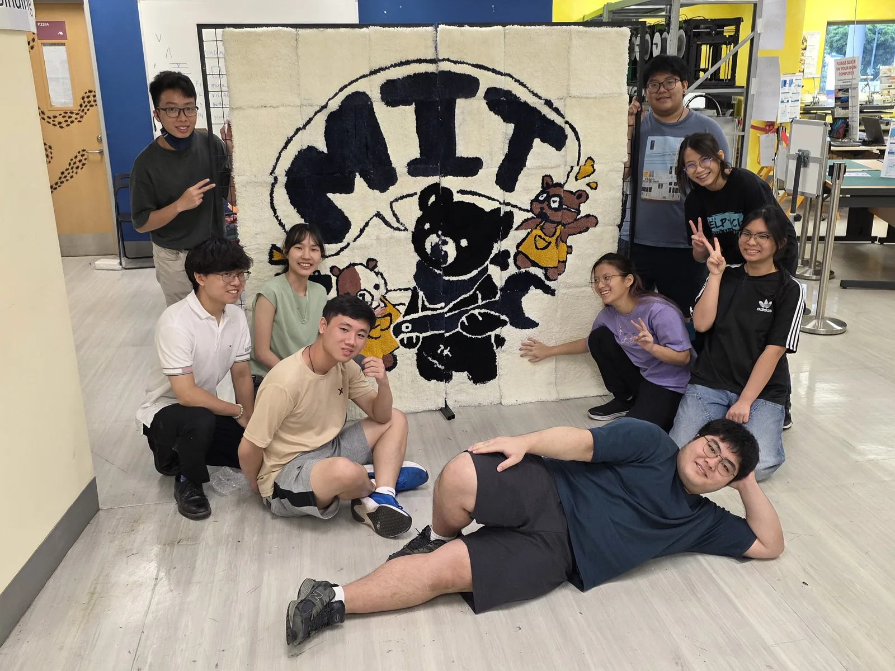

Say hi if you spot them2026–27
Meet the
EXCOs!
MAKERS INNOVATORS TRIBE / NYP
Good people.
Great what-ifs.
A little curiosity. A lot of making things together.
Meet the EXCOs!curiosity: welcome

TRY.
MAKE.
REPEAT.↻
MAKE.
REPEAT.↻
Come for the making.
Stay for the people.
Stay for the people.
FRESH FROM THE WORKBENCH
Made by
the tribe.
Tap a make.
MORE IDEAS OUT IN THE WILD ↘
Little objects. Plenty of imagination.
A LITTLE PLAYTIME
A little
play break.
THE CAMERA ROLL
The good
kind of messy.
30 moments from the tribe.
ON THE NOTICEBOARDWORKSHOPS & EVENTS
See you at
the workbench.
THERE'S A PLACE AT THE TABLE
Your next
what if?
Bring it along. Let's see what happens.